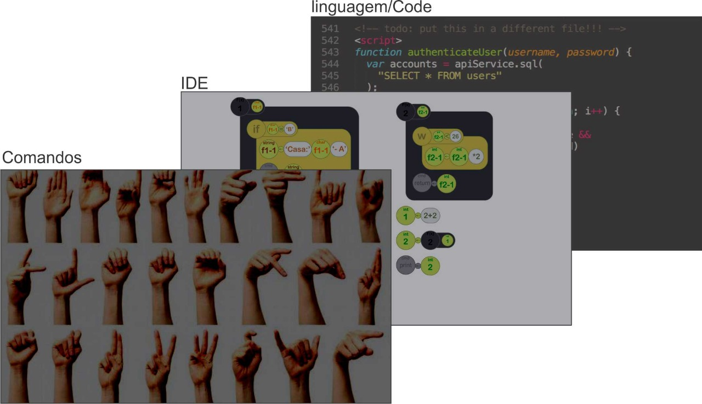

Domínio da linguagem
Aplicação científica.
Método de implementação da linguagem
Interpretação pura, favorecendo flexibilidade na programação.
Paradigma de programação
Declarativo e funcional, onde a linguagem é responsável por executar a intrução da melhor forma.
Ambiente de programação
Terminal gráfico, com seu ambiente próprio.
Aspectos considerados pela linguagem
Portabilidade e facilidade de escrita.
Paradigma da linguagem
A linguagem será do paradigma Imperativo Procedural e também será do paradigma Declarativo Funcional.
Representação BNF
Função:
[function_stmt] ::= [function_id] [params] [stmt] [return_stmt]
While:
[while_stmt] ::= w [logic_expr] [stmt]
Switch:
[switch_stmt] ::= case [logic_expr] | default
Gerenciamento de memória da linguagem
Como é uma linguagem interpretada, o usuário pode criar variáveis que não são utilizadas.
Dessa maneira, o gerenciamento de memória utiliza um garbage collector.
A Xavier também usa Gerenciamento Dinâmico (ou Heap-based allocation).
Formas de abstração de controle e abstração de dados
Abstração de Controle será vista na declaração e uso de funções, operações lógicas, operações aritméticas e de Strings.
Exemplos:
- Declaração e uso de funções;
- Concatenação de strings;
- Uso da função "print()".
A Abstração de Dados será mais vista nos tipos de dados que serão utilizados, sendo abstraídos da linguagem de máquina.
Exemplos:
- Strings;
- Valores Numéricos;
- Arrays;
- Comando Neural (Enum).
Vinculação dos tipos de dados
É utilizada a Vinculação Dinâmica, sem tipagem.
A linguagem é interpretada e necessita ser mais flexível para ser programada.
Compatibilidade e conversão entre tipos de dados
Como será uma linguaguem com variáveis de tipos dinâmicos, a conversão será implícita:
$12 = 2
$45 = 'ABC'
$56 = 37.7
$55 = true
$67 = false
$59 = null
$85 = $12 + $56 // 39.7 -Int será convertido para double em operações matemáticas
$86 = $45 + $12 / $56 // '2ABC37.7' -caso tiver uma string em uma operaçao matemática, todos os operandos são convertidos em uma string e concatenados em um único valor
$87 = $55 + $12 // 3 -boleanos em operações matemáticas: true = 1 e false = 0
$88 = $45 + $67 // 'ABCfalse' -boleanos são convertidos em string através do nome
$89 = $56 + $56 // 37.7 -nulos não possuem peso na conversão
Tipos de dados
A linguagem irá trabalhar com os tipos de dados: Int, double, string, char, boolean sendo armazenadas em variáveis com tipagem dinâmica.
Tais tipos compreendem um conjunto base de variante de dados que toda linguagem utiliza para desenvolvimento de uma aplicação.
A sintaxe da variável será feita atraves de um '$' seguido de um numeral correspondente àquela variável, tal como:
$12 = 2
$45 = 'A'
$65 = 'Hello, World!'
$56 = 37.7
$55 = true
$67 = false
$59 = null
A alocação de memória terá um tamanho fixo para todos os tipo de dados, muito semelhante ao PHP. Ao declarar uma variável sem atribuir um tipo de dado ela terá o valor default null.
Trabalhará também com tipos de dados compostos como Array. Arrays podem ter em cada segmento de sua alocação um tipo de dado, tal como:
$44 = 12, 'C', 'Oi', 45.7, false, null, 'hello, word'
Categorias de controle de fluxo
A linguagem leva influências da linguagem Python, porém não apresentará tratamento de exceções. A linguagem utilizará Iteração, Sequenciamento, Seleção, Recursão e Abstração procedural (já que segue o paradigma Funcional)
Exemplos:
Iteração:
W ($12 = $14)
$23 = $24 * $28
Seleção e Sequenciamento:
IF ($12 = $14)
$23 = $28
$23 = $29
Abstração procedural:
// Declara função
F2 ($f2_1)
W ($f2_1 < 26)
$f2_1 = $f2_1 * 2
^ $f2_1
// Chama Função
F2 ($12)
Regras semânticas e trade-offs
- Checagem dinâmica de tipo: permite grande flexibilidade. Tem trade-off de menos desempenho.
- Retorno de Função opcional: permite funções retornarem valores ou não, comportamento de subrotina. Trade-off na verificação do compilador.
- Variável não necessita ser inicializada: permite mais flexibilidade na programação. Trade-off na estabilidade do programa.
- Funções devem ser declaradas antes do uso: permite a criação e execução correta de funções.
- Teste condicional deve ter tipo booleano: permite utilizar a lógica de maneira mais acertiva, evitando conversões e testes específicos de tipos. Ex. false == 0 -> true (javascript)
Separação em Camadas
A utilização da Xavier se dá em camadas.
Camada de comandos: que utiliza os comandos dados pela interface neural.
Camada IDE: realiza a visualização gráfica do algoritmo escrito.
Camada de código/linguagem: contendo as regras semânticas e de sintaxe.
A XAVIER trabalha na camada de código/linguagem e na camada de IDE
